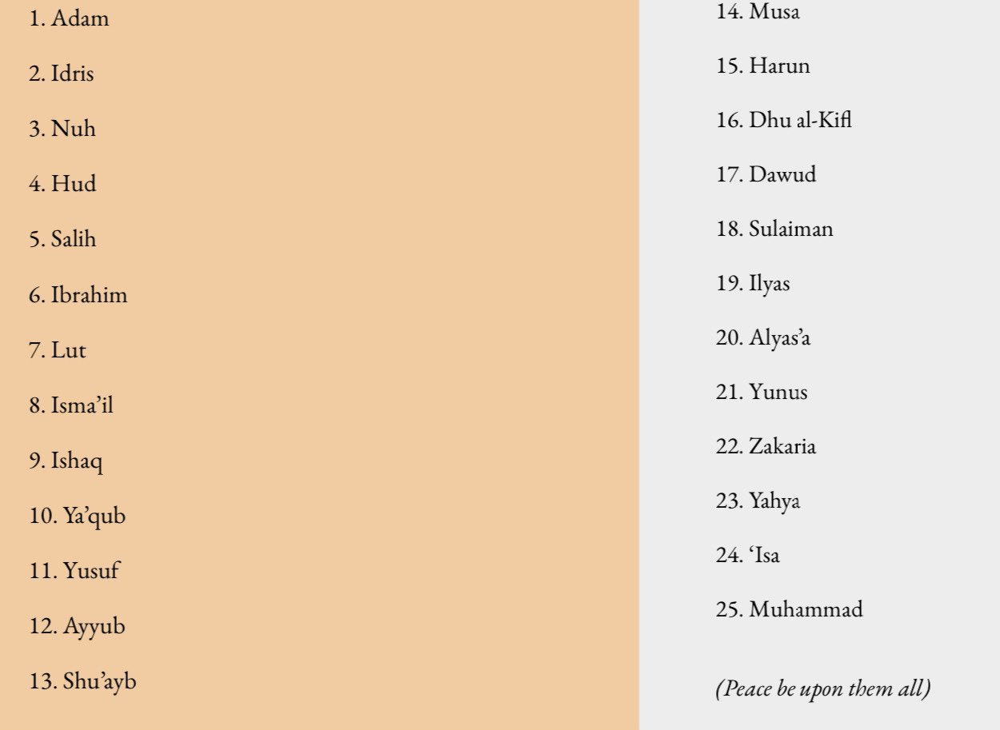

The Six Pillars of Imaan (Faith)
Imaan (faith) is a crucial part of a Muslim’s life, and there are six articles of faith.
These are derived from the Holy Quran and Sunnah of the prophet Muhammad ﷺ.
Its importance is found in the following Quranic verse:
❝O you who believe! Keep faith in Allah and His Messenger and the Book which He revealed to His Messenger, and the Book which He revealed before.
Whoso disbelieves in Allah, His angels, His Books, and His Messengers and the Last Day, he verily has wandered far astray.❞
Quran 4:136
And, also in the following Hadith:
“…What is Belief? The Prophet ﷺ said, ❝Belief is to believe in Allah, His Angels, His Books, His Apostles, and the meeting with Him, and to believe in the Resurrection.❞
Source: Sahih Al Bukhari 50
Here are the six pillars of Imaan:
1.) Belief in Allah
To believe in Allah is to believe that there is only one God worthy of worship, with no partner, or son. This concept is known as Tawheed.
Also, it is to completely believe in the way He is described in the Quran, Sunnah and in His 99 names.
Allah clearly explains Tawheed in the Holy Qur’an as He says:
❝ Say: He is Allah, the One. Allah, the Eternal Refuge. He neither begets nor is born, nor is there to him any equivalent. ❞
Quran 112:1-4
2.) Belief in His Angels
The angels are messengers of Allah and are created from light. They were created before humans, for the purpose of worshipping and obeying Allah.
Angels do not sleep, eat or suffer from illnesses. It is crucial to believe in the angels, as they keep a record of our deeds.
Some of the other duties of angles include: blowing the trumpet on judgment day, taking people’s souls (i.e. angel of death) and to be the keepers of heaven and hell.
❝ Who so disbelieves in Allah, His angels, His Books, and His Messengers and the Last Day, he verily has wandered far astray.❞
Quran 4:136
3.) Belief in His books
Allah revealed books to his messengers as a form of guidance and proof for mankind. Among these books, is the Quran, which was revealed to Prophet Muhammad.
Allah has guaranteed the protection of the Quran from any distortion or corruption. The books that were sent and known to man are:
1.) The Scrolls (Suhof) to Abraham peace be upon him
2.) The original, uncorrupted Torah (Tawrah) sent to Moses peace be upon him
3.) The original, uncorrupted Psalms (Zaboor) sent to David peace be upon him
4.) The original, uncorrupted Gospel (Injeel) sent to Jesus peace be upon him
5.) The Quran sent to Muhammad peace be upon him
Muslims believe in all of the books revealed to the messengers. However, they only follow the Quran, as it is the final revelation,
and aim to implement the rulings into their daily lives, as instructed by Allah and Prophet Muhammad peace be upon him
❝ Indeed, it is We who sent down the Qur’an and indeed, We will be its guardian.❞
Quran 15:9
4.) Belief in His messengers
Allah sent prophets and messengers to preach the same topic: to believe in one God, guiding their nations to Islam. All messengers were created as human beings.
❝ And We certainly sent into every nation a messenger, [saying], “Worship Allah and avoid Taghut.” And among them were those whom Allah guided,
and among them were those upon whom error was [deservedly] decreed.❞
Quran 16:36
There are only 25 prophets that were mentioned in the Quran. Here’s a list:

Most of the messengers of Allah were sent to a specific nation except Prophet Muhammad peace be upon him who was sent to guide all of mankind.
It is a duty of Muslims to send salaams (Peace and Blessings of Allah) when mentioning the names of any of the Prophets.
5.) Belief in the final day (the Hereafter)
Muslims must believe in the existence of an afterlife, where all our deeds will be accounted, no matter how big or small. No one knows when this day will be except Allah,
and thus we must continually work hard to achieve the best.
Muslims also believe in the existence of heaven and hell, and our final destination will be determined according to our deeds in this life.
❝ And We place the scales of justice for the Day of Resurrection, so no soul will be treated unjustly at all. And if there is [even] the weight of a mustard seed,
We will bring it forth, And sufficient are We as an accountant.❞
Quran 21:47
6.) Belief in the Qadar (Divine Decree)
Everything that happens, is due to the will and decree of Allah. Nevertheless, Muslims also understand that they are given free will and
have the ability to distinguish between good and evil.
The belief in Divine Predestination includes belief in four things:
Allah created everything
Allah knows everything; the past and present
There is a record of everything that has happened and will happen
Whatever Allah decrees to occur, will occur. Whatever Allah wills not to happen, does not happen
❝Do you not know that Allah knows what is in the heaven and earth? Indeed, that is in a Record. Indeed that, for Allah, is easy.❞
Quran 22:70
❝The Messenger of Allah (ﷺ) said: ‘No slave truly believes until he believes in four things: in Allah alone with no partner; that I am the Messenger of Allah;
in the resurrection after death; and in the Divine Decree (Qadar).❞
Source: Sunan Ibn Majah 81
No matter how bad a situation may be, we must always put our trust in Allah and His decree.
May Allah SWT strengthen our Imaan and continuously guide us to the correct path. Ameen.